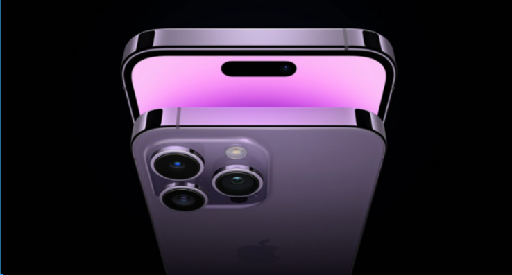
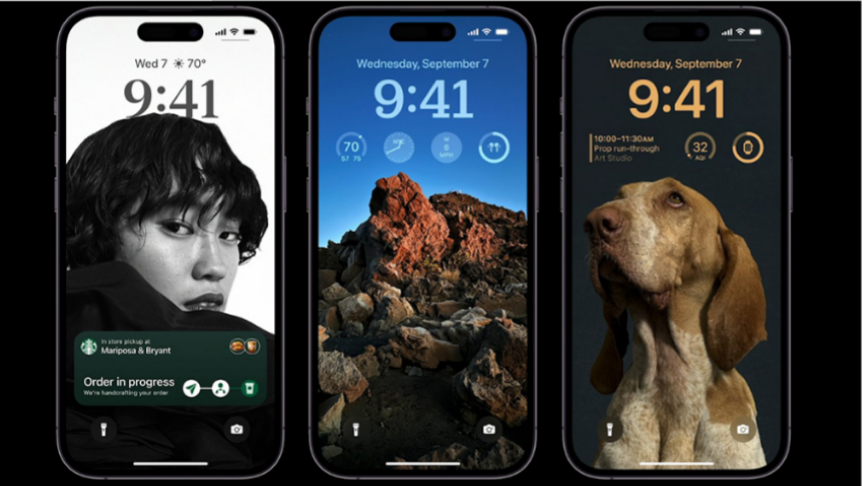

Sản phẩm có trong mình một diện mạo bắt mắt với lối tạo hình vuông vức bắt trend tương tự thế hệ iPhone 13 series, đây được xem là kiểu thiết kế rất thành công trên các đời thế hệ trước khi tạo nên cơn sốt toàn cầu về kiểu dáng thiết kế điện thoại cho đến nay.
Một điểm đặc biệt trên phiên bản này là màu Deep Purple (tím nhạt) mới chưa từng có trên những phiên bản trước đây, vì thế đây chắc hẳn là một đặc điểm nhận diện dễ dàng trên iPhone 14 Pro Max.

Mặt lưng làm từ kính cùng khung thép không gỉ chắc chắn giúp cho iPhone có thêm độ bền bỉ để đồng hành cùng bạn được lâu dài hơn, không những thế nó còn giúp cho thiết bị của bạn trở nên sang trọng và đẳng cấp hơn.
Màn hình chất lượng cho những trải nghiệm xem tuyệt vời
Máy sẽ được sử dụng công nghệ màn hình OLED với kích thước lớn lên đến 6.7 inch, mang lại không gian rộng rãi để bạn thao tác chơi game dễ dàng hơn hay thưởng thức nội dung một cách to rõ.
Một điểm mới về phần màn hình trên dòng sản phẩm Pro Max năm nay là cụm tai thỏ đã được lược bỏ và thay thế vào đó là thiết kế hình notch viên thuốc, đi kèm với đó sẽ là tính năng Dynamic Island để biến cụm này trở nên thú vị hơn qua những thông báo hay thông tin trạng thái.

Vì được trang bị màn hình có khả năng tái hiện màu sắc có độ chính xác cao nên đây chắc hẳn sẽ là một thiết bị rất phù hợp với các bạn đang làm những công việc về đồ họa – thiết kế và in ấn sản phẩm trên điện thoại.
Để tối ưu được không gian hiển thị thì Apple cũng đã chính thức loại bỏ tai thỏ huyền thoại để thay thế vào đó là kiểu bố trí hình viên thuốc độc đáo, vừa đem lại vùng hiển thị rộng rãi hơn mà đây còn là một đặc điểm nhận diện dễ dàng trên chiếc iPhone 14 Pro Max.
Phiên bản lần này còn được hỗ trợ thêm tính năng màn hình AOD (Always On Display) để người dùng có thể xem trực tiếp thông báo hay ngày, giờ mà không cần phải kích hoạt màn hình thiết bị.